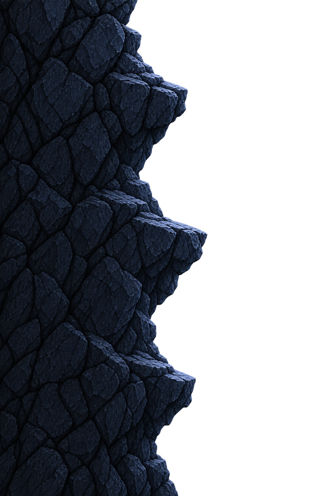
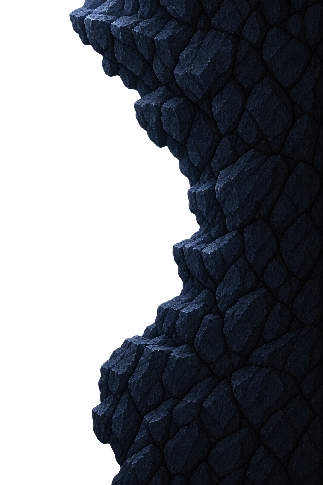
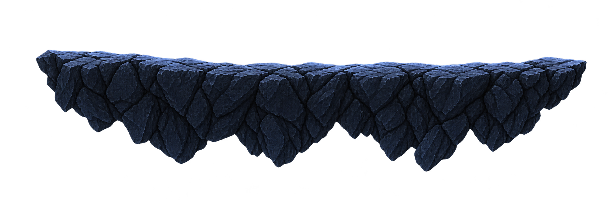

전체 구역





공간 연결용 배치도
점프·충돌 검증 전
하단 진입
하단 진입 → 좌우 등반 → 중간 쉼턱 → 상단 통로. 전 구간 하늘 없음 · 16:9 · 캐릭터 약9%.



공간 연결용 배치도
점프·충돌 검증 전
① 실내 분위기와 밝기 ② 좌우 암벽 사이의 공간감 ③ 중간 쉼턱과 상단 출구가 자연스럽게 읽히는지.
버튼은 구간별 비교 위치를 보여줍니다. 자동 둘러보기는 장면을 순서대로 전환하며 실제 이동·점프를 재현하지 않습니다. 발판 간격과 통로 폭은 플레이 테스트 후 조정합니다.
기존 후면 배경 + 새 좌벽·우벽·발판. 발판은 크기를 달리해 반복 배치했고 입구 바닥·상단 통로·천장에도 재사용했습니다. 실내 눈과 불필요한 소품은 추가하지 않았습니다.
시작맵 외부→입구와 상단 보스 통로의 실제 씬 전환은 포함하지 않습니다. 이번 구역 안의 진입·등반·출구를 구성한 아트 프로토타입입니다.
사양·프롬프트·검토 기록 · 배치 데이터